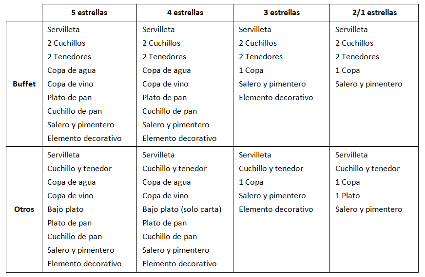
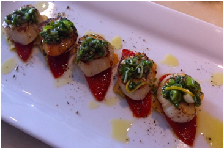

Es un servicio que se presta, tanto en almuerzo como en cena. Sus horarios y criterios generales coinciden con otros ya expuestos con anterioridad. Existen algunas variaciones en la disposición y preparación de los espacios. De hecho, se considera que una mesa para almuerzos o cenas está dispuesta de acuerdo con los siguientes parámetros, especificados por persona:

Cuadro 9. Elementos imprescindibles en la mesa de menú. Emilio Alonso Álvarez.
La palabra MENÚ proviene de la francesa MINUTA, expresión que permanece vigente en la actualidad, en cuanto a algunos aspectos de determinadas elaboraciones culinarias y en la hostelería, en general. Realmente, la minuta responde a la definición de ser una lista o catálogo de los platos que han de consumirse en una comida.
Por el contrario, el Diccionario de la Real Academia se refiere al MENÚ como el conjunto de platos que constituyen una comida. En el sector de la hostelería, se conoce como MENÚ, la relación de platos que componen una comida y que es ofrecida por un establecimiento público destinado a este servicio a un precio fijo, incluidos el pan, agua o vino, servicio e impuestos.
Lo más lógico es que el menú esté en concordancia con la categoría del establecimiento y con los precios de la propia carta, como se verá, sin que deba existir un menoscabo en las raciones o en el servicio de las personas que consuman menú del día con respecto a quienes consuman, en un mismo establecimiento, platos de la carta o menú concertado.
EL MENÚ DE LA CASA O MENÚ DEL DÍA
Está tipificado como Menú de la Casa, en la normativa estatal, y se refiere a la libertad que tienen las empresas de confeccionar un menú o varios, con los componentes incluidos en la carta. Lo que sí es contundente es que el menú debe ofertarse a un precio único, siempre con la bebida, el pan, y el postre, e indicándose si el I.V.A. está o no incluido en el precio. Se trata de una oferta rígida y sin posibilidad de elección por parte del cliente.
Debe tratarse de una oferta sencilla, compuesta por dos o tres platos y el postre, y como recomendación, debe estar basado en una cocina de mercado, es decir, en una cocina que permita hacer una buena administración del departamento, para aprovechar géneros culinarios.
Para asegurar un elevado nivel de variedad en los menús ofrecidos, la planificación de la oferta se realizará por ciclos. Durante cada uno de los ciclos no puede repetirse ningún plato, para lo cual es necesario utilizar fórmulas creativas de carácter personal, y aprovechar preferentemente las materias primas regionales de la temporada. La planificación de ciclos se realizará teniendo en cuenta la estancia media de los clientes, y bajo la premisa de que cada ciclo supere esta estancia media, lo que cobra especial importancia en los hoteles vacacionales y en todos aquellos en los que la estancia media del cliente supere una semana.
En cuanto a la rotación de estos ciclos, la Norma dispone la necesidad de modificarlos con periodos anuales, debiendo existir una renovación mínima del 30 %.
Para establecer los adecuados beneficios de acuerdo con la venta del menú, debe tenerse en cuenta el aspecto de la administración o la interpretación de la oferta desde el punto de vista económico ya que, si bien los costos del menú no deben superar el 30 % o el 40 % del precio fijo de venta, pueden conseguirse incluso mejores proporciones. No obstante, deben primar criterios gastronómicos en su confección.
EL MENÚ – CARTA
Se trata de una lista de platos que, distribuídos en distintos grupos, el restaurante ofrece a un precio único. Este tipo de menú, muy de moda en diferentes establecimientos, como por ejemplo los hoteles, llega en ocasiones a desarrollarse hasta en cuatro o cinco grupos. Incluso conviene destacar que existe un pequeño malentendido en ocasiones con lo que representa el menú del día dado que algunos establecimientos presentan el menú carta como menú del día, conformándolo como oferta de dos primeros platos y dos segundos, más una serie de postres a elegir.
Interprétese en este caso como una evolución del menú del día, ya que de lo contrario sería un menú carta excesivamente poco dotado, o empobrecido.
Como norma básica para realizar un adecuado menú – carta, pensando en hacer una oferta idónea, tanto en lo comercial como en lo económico, que estará conformada por tres o cuatro grupos diferentes de alimentos, y que cada grupo estará dotado de tres a seis platos
Últimamente van apareciendo nuevas tendencias a este respecto y ya se están elaborando opciones distintas de menú – carta donde existen una serie de platos básicos y otros que suponen un incremento de precio o incluso un menú – carta compuesto de diferentes menús fijos que van incrementando su precio de forma paulatina. Pero destáquese por encima de todo que, la filosofía del menú – carta es realmente el hecho de ofrecer distintos platos que, combinados libremente y a un precio único, se presenta a modo de menú.
LA PENSIÓN ALIMENTICIA
Existe como una variante del Menú de la Casa o Menú del Día, destinada en este caso a los clientes residentes o alojados. En éstos, cuando se contrate el conocido servicio de PENSION COMPLETA, el precio no podrá superar el 85 % de la suma de los importes fijados para comida + cena + desayuno. Lógicamente, desde el punto de vista de la normativa nacional y siempre a expensas de lo que determinan las diferentes normativas autonómicas. Sirva como explicación el siguiente ejemplo:
Ejemplo
Un hotel confirma un precio por habitación doble de 37,5 € al tiempo que informa de que el precio de las comidas es de 9 € por servicio (almuerzo y/o cena) y de 4,8 € por concepto de desayuno. Se decide, por tanto, contratar una habitación doble en régimen de pensión completa. Se pide, calcular el precio por persona:
Como la habitación es doble, se indica que tiene un precio de 18,75 € por persona.
18,75 + (9+9+4,8) x 85%= 18,75 + 19,38 = 38,13 €
EL MENÚ CONCERTADO
Es algo muy habitual hoy en día, llegando a existir establecimientos verdaderamente especializados en la prestación de servicios a partir de esta modalidad. Se llama MENU CONCERTADO a aquel que ha sido acordado en cuanto a composición y precio por las partes contratantes del servicio, es decir, empresa y comensales.
Este tipo de menú es, como se ha dicho, muy habitual, y suele emplearse para todo tipo de celebraciones y agasajos, aunque está muy extendido entre la sociedad. Entre los más importantes destacan principalmente dos: BANQUETES Y GALAS. La diferencia entre éstas es que en el caso de los banquetes, los comensales son invitados a partir de este menú, que por tanto, no tienen opción de elegir, y en la mayoría de los casos, ni siquiera se conoce la oferta gastronómica con anterioridad.
En las GALAS, los comensales, una vez conocida la oferta, toman una decisión. Si esta decisión es la de acudir a la gala, deben adquirir el servicio al precio ofertado, estableciéndose en ese momento el concierto.
Ejemplo claro de Banquetes son las bodas o las comuniones,..., y de las Galas, la Cena de Fin de Año, una comida de compañeros de trabajo, una entrega de premios,...
EL MENÚ DE DEGUSTACIÓN

Imagen 10. Plato de un menú de degustación. Emilio Alonso Álvarez.(CC0)
Es un tipo de menú que goza de una creciente presencia en determinados establecimientos, especialmente restaurantes de cierto “renombre”. Ello se debe principalmente a la gran variedad de platos que acumula y la dificultad que ello supone, en ocasiones, para poder mantenerlo en la carta. Debido a ello, la mayoría de los establecimientos que lo sirven, lo mantienen uniforme e idéntico durante algún periodo de tiempo, como por ejemplo una semana.
Se trata de “un conjunto de platos conformados en medias raciones, generalmente, que se ofrecen a un precio único, y que está compuesto por varios grupos de alimentos, incluso pudiendo incluir la/s bebida/s”. Puede llegar a estar formado por hasta seis o siete grupos distintos, por dos bebidas (vinos) distintas e incluso, puede obligar a un mínimo de dos comensales. Su precio, en consecuencia, suele ser bastante elevado.
En cualquier caso, la Norma dispone que, en la confección de los menús, se emplearán, al menos, el 60 % de los métodos de elaboración. Para ello incluye un grupo de métodos: Frito, parrilla, plancha, rebozado, guisado, braseado, gratinado, asado, horno o pochado.
Cualquiera de estas elaboraciones debe acompañarse de guarnición que, salvo en casos especiales, deben acompañar a la elaboración en número de dos tipos diferentes, y contrastar con las salsas. Estas guarniciones deben variarse en un 50 % diariamente.